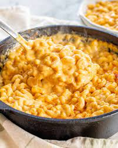

Mac and Cheese

Prepared Mac and Cheese
Macaroni and cheese is a dish of cooked macaroni pasta and a cheese sauce,
most commonly cheddar sauce.
Traditional macaroni and cheese is a casserole baked in the oven;
However, it can be prepared in a sauce pan on top of the stove or using a packaged mix.
Ingredients
- Macaroni
- Butter
- Flour
- Milk
- Salt
- Pepper
- Paprika
- Cheese
Steps
- Add water to pot in use and let it boil. Place Macaroni in pot and let it cook for around 10 mins.
- In a separate pan, mix the butter, flour, milk, cheese, salt, pepper and paprika together. Let it simmer and boil
- Add cooked macaroni to pan with simmering mixture. Mix thoroughly and allow to sit for around 5 mins.
- Serve Hot and enjoy!